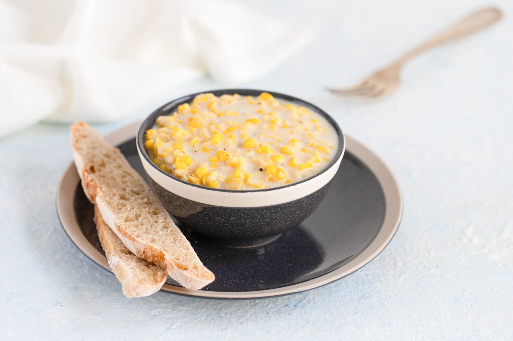

Honey Glazed Salmon
Description
This honey glazed salmon is the perfect balance of sweet and sour!
Ingredients
- 2 untreated cedar planks
- 0.25 cup pineapple juice
- 0.3 cup soy sauce
- 2 tablespoons white vinegar
- 2 tablespoons lemon juice
- 1 tablespoon olive oil
- 0.75 cup honey
- 0.25 cup packed brown sugar
- 1 teaspoon ground black pepper
- 0.5 teaspoon cayenne pepper
- 0.5 teaspoon paprika
- 0.25 teaspoon garlic powder
- 6 (6 ounce) skinless, boneless salmon fillets
- 1 pinch salt and pepper to taste
Directions
- Soak the cedar planks in warm water for 1 to 2 hours. Add a splash of bourbon to the water if desired.
- Bring the pineapple juice, soy sauce, vinegar, lemon juice, olive oil, and honey to a simmer in a saucepan over medium-high heat. Reduce the heat to medium-low, and stir in the sugar, 1 teaspoon black pepper, cayenne pepper, paprika, and garlic powder. Simmer, stirring occasionally, until the sauce has reduced to a syrupy consistency, about 15 minutes. Set the sauce aside.
- Preheat an outdoor grill for medium heat. Place the planks on the grate. They are ready to cook on when they start to smoke and crackle just a little.
- Season the salmon with a light sprinkling of salt and pepper. Place the fillets onto the smoking cedar planks, close the lid of the grill, and cook for 10 minutes. Spoon a small amount of the sauce over the salmon fillets, and continue cooking until the fish turns opaque in the center, about 5 minutes more. Serve with the remaining sauce.